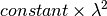

Units are a set of small classes in Mantid that define a unit of measure, and the conversions between various units.
The Unit Factory is a Dynamic Factory that creates and hands out instances of Mantid Unit objects.
The following units are available in the default Mantid distribution.
| Name | ID (as known by Unit Factory) | Unit | Relevant equation |
|---|---|---|---|
| Time of flight | TOF |  |
TOF |
| Wavelength | Wavelength |  |
 (see below) (see below) |
| Energy | Energy |  |
 |
| Energy in wavenumber | Energy_inWavenumber |  |
 |
| Momentum (k) | Momentum |  |
 |
| d-spacing | dSpacing | |
 |
| Momentum transfer (Q) | MomentumTransfer | |
 |
Momentum transfer squared ( ) ) |
QSquared |  |
 |
| Energy transfer | DeltaE | |
 |
| Energy transfer in wavenumber | DeltaE_inWavenumber | |
|
| Spin Echo Length | SpinEchoLength |  |

The constant is supplied in eFixed
|
| Spin Echo Time | SpinEchoTime |  |
 The constant is supplied in eFixed
|
Where  and are sample to the source and sample to
detector distances respectively,
and are sample to the source and sample to
detector distances respectively,  and
and
 is the energy of neutrons leaving the source.
is the energy of neutrons leaving the source.  here is the Bragg scattering angle (e.g. half of the
-angle used in spherical coordinate system directed along
Mantid z-axis)
here is the Bragg scattering angle (e.g. half of the
-angle used in spherical coordinate system directed along
Mantid z-axis)
Note on Wavelength: If the emode property in :ref: ConvertUnits <algm-ConvertUnits> is specified as inelastic Direct/Indirect (inelastic) then the conversion to wavelength will take into account the fixed initial/final energy respectively. Units conversion into elastic momentum transfer (MomentumTransfer) will throw in elastic mode (emode=0) on inelastic workspace (when energy transfer is specified along x-axis)
Units on MatrixWorkspaces are accessed via the Axis.
ws = CreateSampleWorkspace()
for i in range(ws.axes()):
axis = ws.getAxis(i)
print "Axis {0} is a {1}{2}{3}".format(i,
"Spectrum Axis" if axis.isSpectra() else "",
"Text Axis" if axis.isText() else "",
"Numeric Axis" if axis.isNumeric() else "")
unit = axis.getUnit()
print "\t caption:{0}".format(unit.caption())
print "\t symbol:{0}".format(unit.symbol())
Output:
Axis 0 is a Numeric Axis
caption:Time-of-flight
symbol:microsecond
Axis 1 is a Spectrum Axis
caption:Spectrum
symbol:
ws = CreateSampleWorkspace()
axis = ws.getAxis(1)
# Create a new axis
axis.setUnit("Label").setLabel('Temperature', 'K')
unit = axis.getUnit()
print "New caption:{0}".format(unit.caption())
print "New symbol:{0}".format(unit.symbol())
Output:
New caption:Temperature
New symbol:K
Writing and adding a new unit is relatively straightforward. Instructions will appear here in due course. In the meantime if a unit that you require is missing, then please contact the development team and we will add it to the default Mantid library.
Category: Concepts